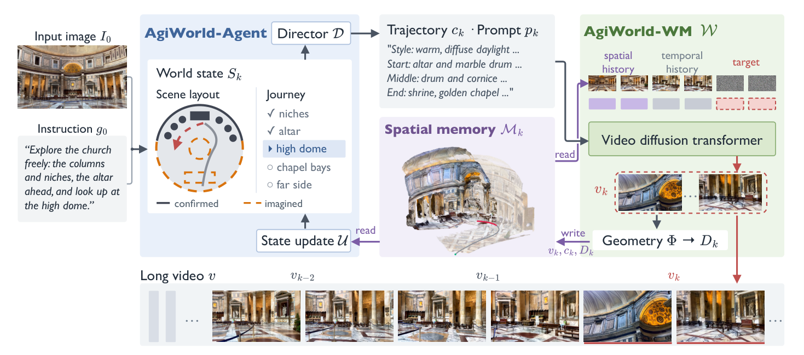

Paper Notes
Task and Two Kinds of State
输入是初始图像 I₀ 和自由形式指令 g₀，输出是从该图开始、按指令探索的长视频。每次生成五秒；相机轨迹和文本提示由 agent 逐段产生。评测关注返回旧区域时是否保持外观与结构，以及继续探索时是否沿计划运动。这与 LingBot-Map 接收真实 RGB 流并估计几何的任务不同。
需要分清两个状态。M 保存已经生成的图像、相机和深度，反投影后构成点云空间记忆；S 是 agent 使用的粗粒度布局，记录表面、开口和对象的名称、轮廓、高度及外观，同时记录旅程阶段。S 把内容分为 confirmed 与 imagined，后者只是设计意图，不能当作已经观察到的证据。
生成器每步只读取五张空间历史帧及短时间上下文，所以网络输入历史预算不随视频长度增长。但底层 M 持续积累图像和几何。固定 attention context 不等于固定总存储，论文不能直接充当严格固定容量 memory 的证据。
Paper Notes
Reading the Original Pipeline

Shaoheng Fang et al. · Original figure, unmodified · arXiv perpetual non-exclusive license · Paper & Caption ↗
沿 Figure 2 从左向右看：director 从 Sₖ 和用户目标产生米制轨迹 cₖ、结构化提示 pₖ；历史检索根据即将看到的表面从 Mₖ 选出空间上下文，最近帧提供短期连续性；视频模型 W 生成 vₖ，再由几何估计器 Φ 计算深度，写回 M。状态更新 U 读取生成结果，修订布局并继续规划。
这里的闭环有具体的纠错动作。若生成内容违背关键指令，或几何检查发现视点高度、前方障碍等不合要求，可以回滚当前片段及其 memory，再用修改后的轨迹和提示重生成。附录限制每段最多重试一次、每条 rollout 最多重生成四段；因此这不是无限试到成功的机制。
VLM 负责语义设计和检查，但确定性工具处理点云、投影、可见性、轨迹插值和碰撞量测。实验采用 GPT-6-Astra。几何工具约束的是 agent 输出的布局和路径；不能据此推断 VLM 语义监督已经通过可微损失改善了深度网络。
(cₖ, pₖ) = D(Sₖ, g₀)
vₖ = W(Mₖ, cₖ, pₖ)
Dₖ = Φ(vₖ, cₖ)
Mₖ₊₁ = Mₖ ∪ {(vₖ, cₖ, Dₖ)}
Sₖ₊₁ = U(Sₖ, Mₖ₊₁, g₀)Paper Notes
Retrieval by Visible Surface Coverage
相机视锥重叠只说明方向与范围相近，并不保证历史画面中的表面现在可见。直接把离散点投影到 z-buffer 也有两个问题：没有朝向信息时，物体背面的点可能被当作证据；点与点之间的孔洞会让后方表面漏出来。
作者从深度估计点法向，并把相邻深度像素连接成小表面片 surfel。只有面向目标相机、且没有落在前方表面后面的点才计为可见。公式中 nₓ 是法向，oᵣ 是目标相机中心，zᵣ 是该点的相机深度，dᵣ 是栅格化后最前表面的深度；δ=0.05 为数值容差，避免同一表面因误差自遮挡。
一条待生成轨迹取六个目标视角。先统计时间上下文最后一帧已经覆盖的目标像素，再贪心选取能补充最多未覆盖像素的历史帧，直到选五帧。选择依据是互补覆盖，而不是取五张各自得分最高但内容重复的帧。
历史进入模型后仍需明确像素对应。作者将源图的归一化坐标、来源编码及深度投影到目标帧，跳过深度不连续区域；编码器将对应信息变为生成 token 的 query/key 输入偏置。注入的是寻址线索，不是把有孔洞的 warped RGB 当成必须照抄的外观。检索与注入共用可见性规则，避免读入的证据又在另一条路径被错误匹配。
visᵣ(x) = 1[nₓ · (oᵣ − x) > 0] × 1[zᵣ(x) ≤ (1 + δ)dᵣ(πᵣ(x))]
Paper Notes
Reliability and Conflict Handling
推理时，记忆来自模型自己的生成结果与估计深度，轻微相机漂移可能被下一段当成依据反复放大。可靠点需同时满足几何置信度门槛、入射角小于 70°、距离小于 30 m。可靠点优先用于读取和对应注入，低可靠点只填补空白。
低可靠不等于不存在。作者让这些点仍参与遮挡表面的构造，防止把它们删除后误读后面的物体。相反，若一个较晚生成的点侵入早期可靠视图已经确认的空闲空间，就把这个冲突点从读取、对应和遮挡表面中一起移除。两种处理针对的是“证据不够可靠”和“与可信历史冲突”这两类不同问题。
教学算例：早期视图在某像素观察到 4 m 表面，新点投影后只有 3.6 m；阈值 0.95×4=3.8 m，因此满足侵入早期空闲空间的条件。是否删除还取决于早期观测是否可靠。这个比较是在同一投影视角中进行，不能直接比较两台相机各自的原始深度。
早期内容优先来自生成任务的定义：保持与先前生成世界的一致性。真实重建中较早观测可能更差，环境也可能发生运动；迁移到 LingBot-Map 时，应把这一规则改为经可见性和动态状态验证的证据比较，而不是永久信任第一帧。
Conflict with earlier view u: zᵤ(x) < (1 − δ)dᵤ(πᵤ(x))
Paper Notes
Training and Inference
基座是 Wan2.2-I2V-A14B，初始化自 LingBot-World，不能与 LingBot-Map 混淆。训练数据来自九个真实或合成来源，筛选后约 9.3 万段源视频、500 小时。统一到 16 fps、480p、最长六十秒；Depth Anything 3 生成几何标注，有真值位姿的数据保留真值。Qwen3-VL 给每五秒片段生成风格、开头、中段和结尾描述，相机运动单独由相机条件输入。
第一阶段冻结主干，只训练米制 camera adapter，使用单片段 flow-matching 目标。第二阶段加入相对相机编码和对应注入编码器，与 self-attention 一起训练；第一阶段 adapter 及其他主干部分冻结。历史作为干净上下文，损失仅施加在生成帧上，并对历史做噪声和饱和度扰动以适应推理偏差。
可见性筛选和坐标 warp 是无参数的几何过程，学习发生在将这些信息注入 attention 的模块中；可靠性维护主要用于推理时处理自身生成历史。论文没有提出直接优化 memory 向量的语义重建 loss，也没有证明后段误差通过整个历史估计器端到端更新早期写入。
第三阶段用 Phased DMD 将高噪声、低噪声专家各蒸馏为两步，合计四次前向。但主要世界模型对比表使用完整去噪 schedule，不能把表中质量与四步推理成本直接拼成同一运行配置。截至本次阅读，官方项目页仍标注 Code soon。
Paper Notes
Evidence from the Benchmarks
DL3DV-Evaluation 测试六十秒回访轨迹；World Explore 包含从内部数据集留出的四十个室外场景，每条轨迹六十秒，主要持续向外探索。相机误差与重投影误差由 Depth Anything 3 对生成视频估计后计算，属于估计器介导的指标，并不等价于真实地图的绝对精度。
与 Lyra 2.0 比，AgiWorld 在 World Explore 的平移误差由 1.32 m 降至 1.05 m，FID 由 42.73 降至 35.37；但在 DL3DV 的旋转误差上，AgiWorld 为 0.99°，不及 Lyra 2.0 的 0.63°。几何和视觉指标并非全部占优。
更有解释力的是 Table 2 的同模型消融。下面列出最后十秒，避免六十秒平均值掩盖后段累计误差。只加遮挡筛选时，旋转和重投影改善，平移反而恶化；联合可靠性维护后四项才同时改善。这支持“读取策略需要和证据质量控制配合”，而不是“可见性规则单独必然有效”。
agent 的世界状态、更新和几何工具消融主要展示定性案例，不能与世界模型的量化消融混为一谈。论文也没有用语义开关对照隔离语义对三维几何的因果收益。
| Variant · Last 10 s | FID ↓ | Translation (m) ↓ | Rotation (deg) ↓ | Reprojection ↓ |
|---|---|---|---|---|
| Neither component | 57.74 | 0.46 | 2.18 | 0.049 |
| Occlusion only | 56.94 | 0.56 | 1.40 | 0.040 |
| Occlusion + reliability | 51.84 | 0.37 | 1.38 | 0.031 |
Paper Notes
Implications for Streaming Reconstruction
与已有 LingBot-Map 方案联系最直接的是：语义相近的历史不一定是当前表面的有效证据。写入前语义融合之后，仍应检验后续读取是否满足可见性、局部对应和可靠性。AgiWorld 提供的是几何证据筛选的机制参考，不是语义融合已经改善真实重建的实证。
可检验的迁移假设是：在相同 memory 字节预算下，让语义增强的历史表示配合几何有效性门控，减少遮挡与重复纹理造成的错误读取。最低限度对比普通 memory、仅语义融合、仅几何门控、两者联合，并按短间隔和长间隔回访分别报告深度、完整度与位姿。上述实验是研究建议，本笔记没有对应结果。
与 HiMEM 相比，两者都强调不能只看相似度，但任务和监督不同：HiMEM 用任务成败构造规则，AgiWorld 用表面可见性与生成一致性筛选历史。对于真实场景，应保留观测来源、置信度和可修订状态，避免把生成世界中的设计承诺当成物理事实。
Discussion
Reading Questions
Is the total memory bounded?
不是。固定的是每次生成使用的历史上下文；底层图像、深度和点云记忆持续增长。
Why keep unreliable geometry for occlusion?
它可能不能提供精确外观对应，但仍可能是一个真实遮挡面。直接删去会暴露后方原本不可见的历史。
Does this establish a semantic benefit for reconstruction?
没有。量化 memory 消融主要检验遮挡与可靠性，任务也是视频世界生成；真实重建中的语义增益仍需独立受控实验。
References
Figure 2 is reproduced in limited form for scholarly discussion with attribution. The arXiv perpetual non-exclusive license is not a Creative Commons reuse license. Results are reported from the paper; no independent reproduction is claimed.
Verified on 2026-11-12. Paper results refer to the linked versions. Repository references were checked on this date.